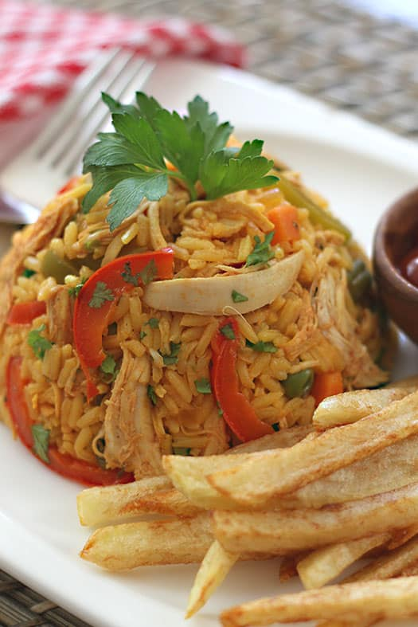

Chicken and Rice

Description
This arroz con pollo is an easy chicken and seasoned rice dish that's comforting and delicious. Easy to adjust to use chicken thighs, or leftover chicken.
Ingredients
- 4 skinless, boneless chicken breast halves, cut into 1-inch pieces
- ½ teaspoon salt, divided
- ½ teaspoon ground black pepper, divided
- ½ teaspoon paprika, divided
Steps
- Season chicken with a 1/4 teaspoon of salt, 1/4 teaspoon pepper, and 1/4 teaspoon paprika.
- Heat oil in a large skillet over medium heat. Add seasoned chicken; cook and stir until no longer pink in the center and golden brown on all sides, about 10 minutes. Transfer chicken onto a plate; set aside.
- Add green pepper, onions, and garlic to the same skillet; cook and stir for 5 minutes. Add rice; cook and stir until rice is opaque, 1 to 2 minutes. Stir in broth, tomatoes, white wine, and saffron. Stir in remaining 1/4 teaspoon salt, 1/4 teaspoon pepper, and 1/4 teaspoon paprika; bring to a boil, cover, and simmer for 20 minutes.
- Add chicken and stir until heated through. Stir in parsley and serve.
Go back to Menu